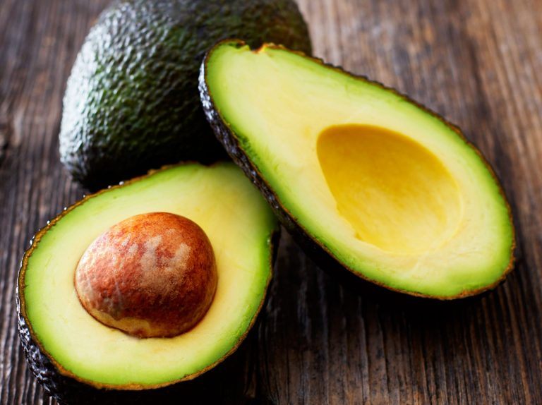

By Gretchen Smail
November 10, 2022
Hailed as a super food, avocadoes are everywhere: in smoothies, on toast, and even in some desserts and boba drinks. The United States is the number one importer of avocadoes, making up 35% of the world's consumption of the fruit. But the U.S. is far from being the country that produces the most avocadoes for the rest of the world.
Most countries that provide the rest of the world with avocadoes are located close to tropical equator — but climate change may continue to upend that as temperatures and rainfall patterns shift. (The only major exception to this is the Netherlands, which imports and then exports large quantities of avocadoes to the rest of Europe.)
The countries that exported the most avocadoes in 2021 are: